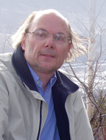

Dr. Dobb's Journal April 2008
Dr. Dobb's Excellence in Programming Award is annually bestowed on individuals who, in the spirit of innovation and cooperation, have made significant contributions to the advancement of software development. The first award was given out in 1995, recognizing two individuals: Alexander Stepanov, for his work on the C++ Standard Template Library, and Linus Torvalds, for creating Linux.
It is particularly pertinent that the first Dr. Dobb's Excellence in Programming Award acknowledged work specifically related to the C++ programming language. With on the order of a million users, C++ is one of the most widely used programming languages ever, and a number of subsequent recipients also did their award-winning work in C++. The influence of C++ on modern programming practice is incalculable. Features that first saw mainstream use in C++ can be seen in newer languages such as C# and Java, not to mention the newest versions of older languages such as C and Fortran, and systems such as CORBA and COM.
Anyone who has used a computer or spent time on the Internet has almost certainly used a program written in C++. C++ is the primary language used by many programmers in telecommunications. C++ code is embedded in devices from cameras to elevators, and by some measures more game developers use it than any other language.
This year's recipient of the Dr. Dobb's Excellence in Programming Award is the inventor of C++, Bjarne Stroustrup.
To have created one of the world's dominant programming languages, one adopted by millions of programmers worldwide, a language that has helped to promote object-oriented programming like no other, is sufficient reason to be recognized with an award. But in selecting Bjarne Stroustrup for this award, we are recognizing more than the creation of a widely used and influential programming tool. We also honor someone whose values, efforts, and achievements are an inspiration to all programmers. Those values have been evident throughout his life.
The son of an upholsterer and a secretary, Stroustrup was born, grew up, and went to university in the coastal city of Aarhus in Denmark, where he earned the Danish equivalent of a Masters degree in mathematics and computer science in 1975. His proclivity to bridge academic and pragmatic work in computer science was evident even then. While pursuing his degree, he did contract programming for Aarhus businesses: accounting, payroll, billing, mortgage calculation. By the time Stroustrup had earned his degree, more than one in four mortgages in Denmark were being calculated using software written by this hard-working undergraduate.
This real-world experience appealed to Stroustrup. It spoke to his working-class roots and to his intense work ethic. Although he did well in the math- and theory-heavy academic atmosphere of university computer science, he was at least equally drawn to software as "something that you build and is used in the real world. Being able to help that guy—it's something concrete," he told author Steve Lohr, who interviewed him for the book Go To. "I always like to build things and see things work. You can kind of get that with a math proof, but it's not the same thing."
Moving to England during the early days of the personal computer revolution, Stroustrup earned a Ph.D. in the Computing Laboratory at Cambridge University, studying under David Wheeler and focusing on the design of distributed systems. There he shared office space with Bruce Croft, Jeremy Dion, Neil Grey, David Harper, and Mark Pezzaro. Stroustrup is a member of Churchill College.
In 1979 Stroustrup moved to the United States to work at the Computer Science Research Center of Bell Telephone Labs. Riding out the 1984 breakup of the Bell system and the 1995 breakup of AT&T, he joined AT&T Bell Labs, the part of Bell Labs that AT&T kept, where he headed up the Labs' Large-Scale Programming Research Department, keeping that position until 2002, when he joined the computer science department of Texas A&M University. Today he holds the College of Engineering chair in Computer Science at Texas A&M.
He began work on what would become C++ in the same year that he joined Bell Labs. It began as a natural sequel to his Ph.D. work in distributed systems, as a project to distribute UNIX over a network of small computers. Stroustrup set out to develop some tools to help the project along and, as sometimes happens, he found the tools more interesting than the project. The tools turned into something called "C with Classes," which later became known as "C++."
C++ was used internally in AT&T in 1983 and the name, suggested by Rick Mascitti, was settled on in that year. The first commercial implementation was released in 1985, the year of the graphical user interface, the year that Microsoft delivered Windows 1.0, Digital Research shipped GEM, Commodore released the Amiga, Atari brought out the ST, and not long after Apple delivered the Macintosh. It was a propitious time to introduce a practical class-based programming language.
C++ reflected Stroustrup's interest in combining the practical and the theoretical, which in turn reflected his working-class background and his academic achievements, his American career and his European education. Although he mines his own theoretical education for ideas, he always looks for the practical difference he can make in people's lives. It even extends to his taste in philosophers. "I feel most at home with the empiricists rather than the idealists," he has said. "I...prefer Aristotle to Plato, Hume to Descartes." C++ also reflected Stroustrup's respect for the individual: "Respect for groups that doesn't include respect for individuals of those groups isn't respect at all. Many C++ design decisions have their roots in my dislike for forcing people to do things in a particular way." Indeed, he prefers to think of C++ as a language that supports multiple programming styles rather than as an object- or class-based language.
Not that classes aren't key to its design. His dream language, he once told author Steve Lohr, would be a blend of Algol and Simula, two European languages. But when he created his language, he based it on C, the most practical, efficient, and American of languages, adding to C the concept of classes that he admired in Simula. Hence "C with Classes." In fact, despite the influence of Smalltalk over the graphical user interfaces that emerged at the same time as C++, it was primarily through C++ that the programming community, at least in America, learned class-based programming.
C++ is a language created by an individual. There were, Stroustrup says, no design documents and no committee. Today, thousands of developers have contributed to the evolution of C++, but Stroustrup has continued to be deeply involved in its advancement. He took an active role in the creation of the ANSI/ISO standard for the language, and continues to work on the maintenance and revision of that standard. He wrote the first book on the language, which remains the standard text today.
He continues to work on programming tools, techniques, and languages as a professor and as a member of the Parasol Lab at Texas A&M, which concentrates on research on next-generation high-performance computing languages and systems and for the development of algorithms and applications that exploit these to solve computation and/or data intensive applications. His primary tool for this work is C++.
This is not the first recognition of Bjarne Stroustrup's work. His many honors include election to the National Academy of Engineering and the IEEE Computer Society's Computer Entrepreneur Award, both reflecting his pragmatic side. His scientific honors includes being named one of America's top 12 young scientists by Fortune magazine and receiving the William Proctor Prize for Scientific Achievement from Sigma Xi. He is an AT&T Fellow and a Bell Laboratories Fellow, an ACM Fellow and an IEEE Fellow, is a recipient of the ACM Grace Murray Hopper Award for laying the foundations for C++, and was named by Byte magazine as one of the 20 most influential people in the computer industry in the last 20 years. He can now add to this impressive list the 2008 Dr. Dobb's Excellence in Programming Award.
Through his proclivity for putting theory into practice, his vision in matching the tool to the need, his respect for the intelligence and opinions of the working programmer, and his tireless work in advancing the art and science of software development, Bjarne Stroustrup most assuredly serves as a model for excellence in programming.
|
Past Award Recipients The Dr. Dobb's Excellence in Programming Award is annually bestowed on individuals who, in the spirit of innovation and cooperation, have made significant contributions to the advancement of software development. Past recipients include:
|